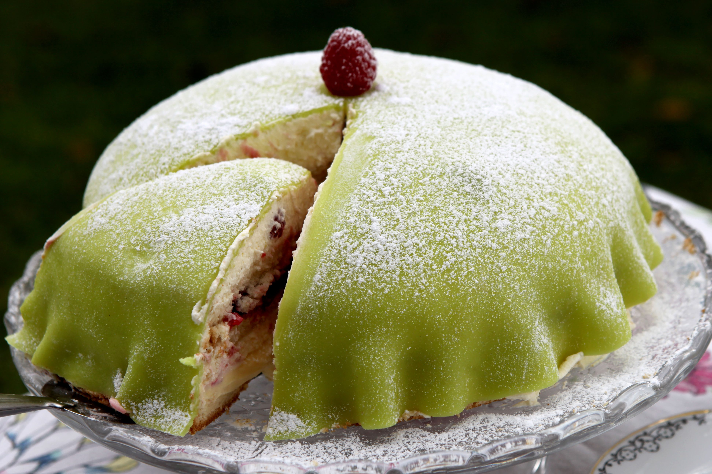
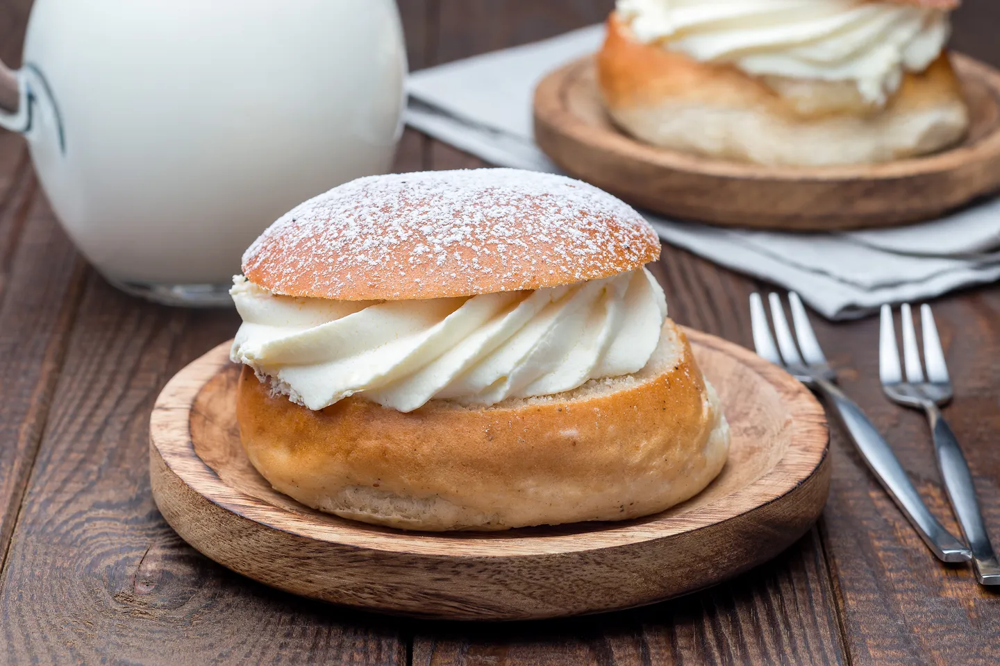
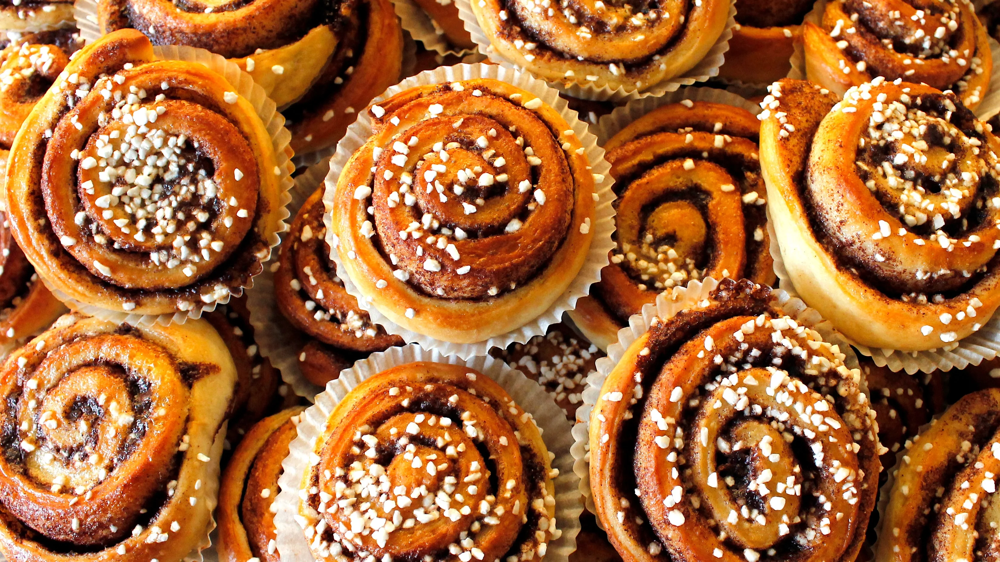
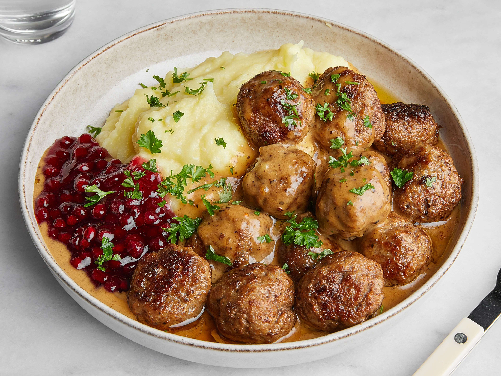
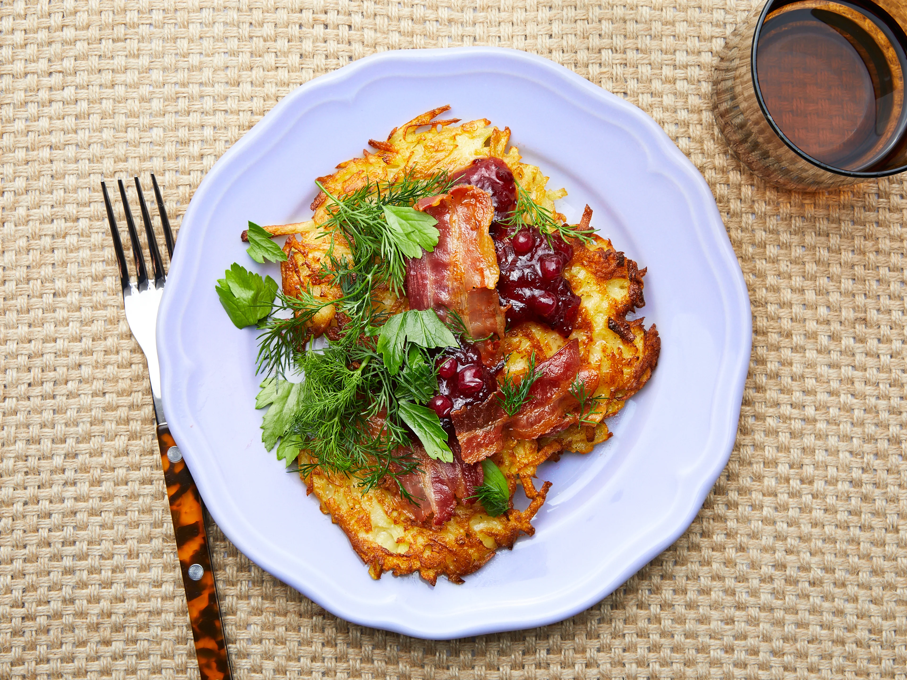
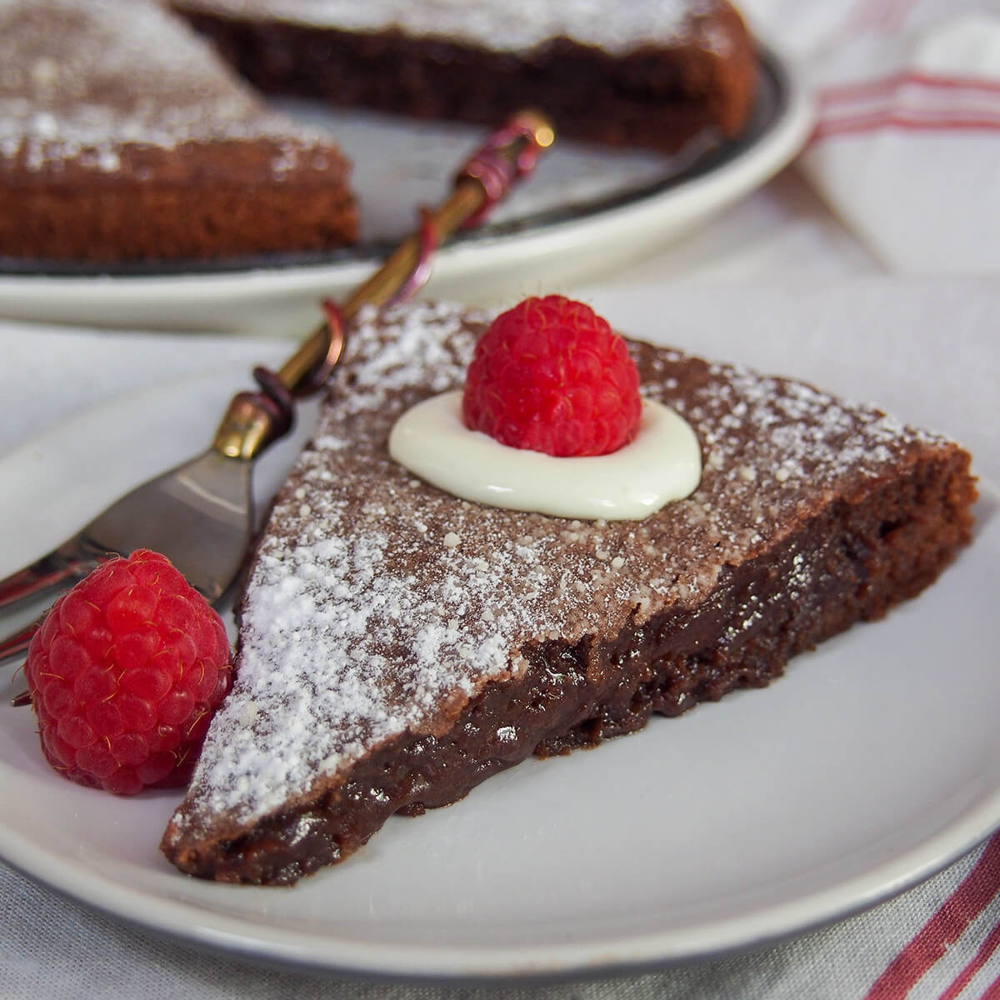
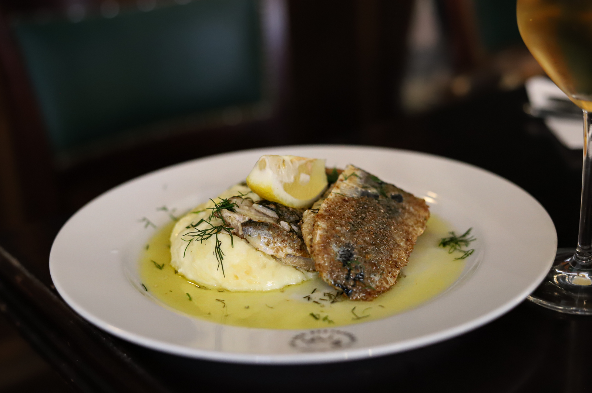
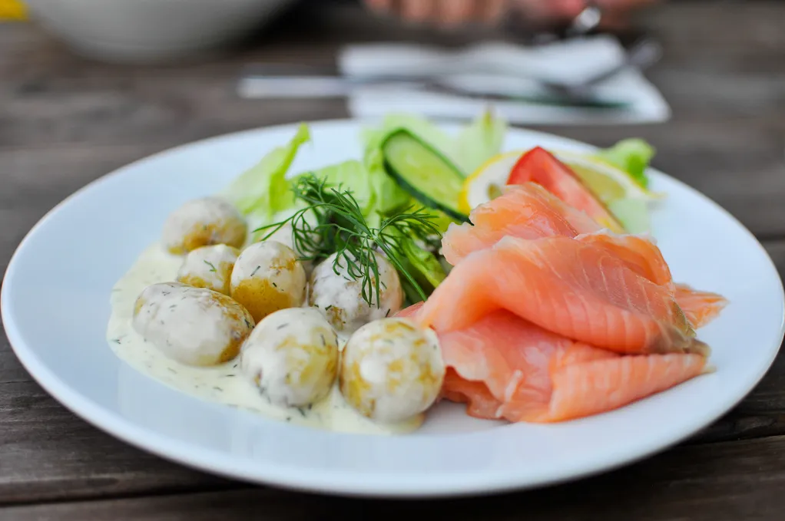

Stockholm’s food is a mix of traditional Swedish flavors and modern cooking. Since the city is by the sea, seafood like herring and salmon is very popular. People also enjoy locally sourced meats, vegetables, and berries. Many restaurants focus on fresh, seasonal ingredients. Swedish food culture also includes fika, a coffee break with pastries like cinnamon buns. You can find great food in markets like Östermalms Saluhall, or try a traditional smörgåsbord, a buffet with various Swedish dishes. Stockholm also has many modern and Michelin-starred restaurants offering creative Nordic cuisine.
To know more about these foods and to visit restaurants to eat them then click here

